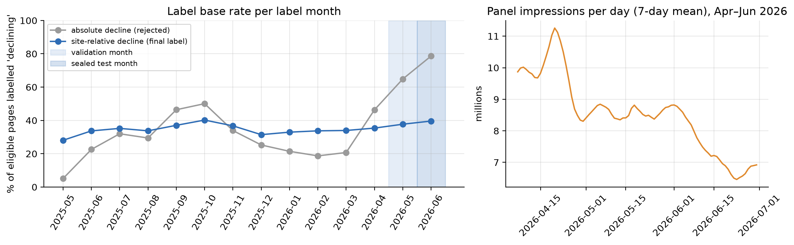
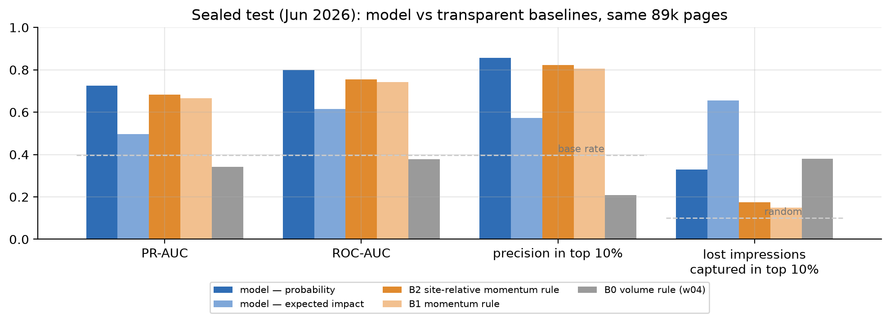
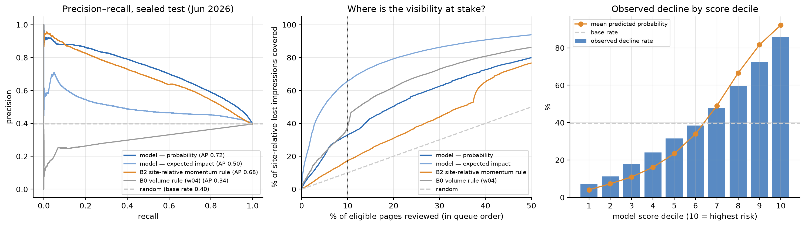
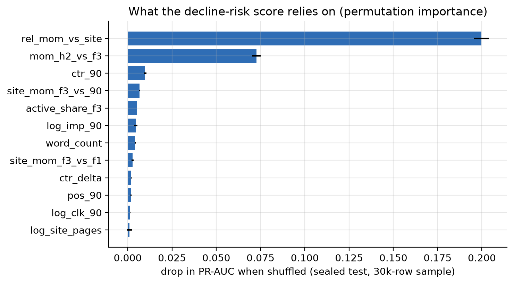
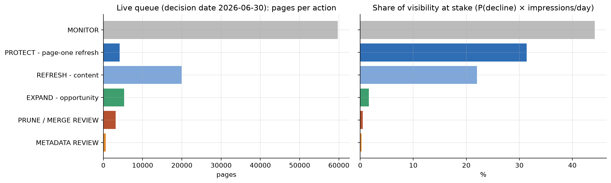

Which pages should an editor review first?
A time-aware, site-relative decline-risk queue for content refresh
Abstract
1. Introduction and problem statement
Every month some pages start losing search visibility, and an editor has a limited number of review hours. Reviewing in arbitrary order wastes hours on pages that are fine; missing a sliding page with real demand lets the loss continue. This work supports one recurring decision: at the end of each month, which visible pages enter next month's review queue, in what order, with what suggested action and why. In the last month of the panel there are 92,932 eligible visible pages — far too many to review by hand.
The unit of analysis is one page × one monthly decision date. The output is decision support for a human reviewer: not an automated edit, not a promise that a refresh recovers traffic, and not a statement about how search engines rank pages.
2. Data
FlyRank pseudonymized warehouse release flyrank_pseudonymized_warehouse_release_v20260703 (Hugging Face, gated), queried in place
with DuckDB. Tables used: dim_clients (104 rows), dim_content
(519,606) and fact_content_daily_performance (78,835,655 daily rows,
2025-01-27 → 2026-06-30), reduced once to 2.87M page-month rows. The query table was not used: its fixed
window overlaps the test month. A grain probe found 6,390 exact duplicate rows in the
June-2026 partition (the test month); they were dropped.
Exclusions, and why:
- Only 67 of 104 clients ever record a search impression; the client must be tracked in all four months involved, so "no impressions" never means "no tracking".
- Impressions in each of the three feature months, and ≥ 300 in total (≥ 100/month), so a 20% drop is not noise.
- Pages at least 90 days old (young pages are still ramping up).
- Pages deleted by export time (0.12% of labelled rows): their drop is removal, not decay.
- Sites with fewer than 20 eligible pages in a month (the site median would be unstable).
All identifiers are pseudonymized; no client names, domains, URLs, titles or queries appear anywhere in this work.
3. Methodology
Label: site-relative decline
The first label — "next-month daily impressions more than 20% below the page's 3-month average" — measured the whole panel, not the page: panel impressions slid from 9.9M/day (early April) to 6.9M/day (late June 2026), so 79% of test pages would have "declined". The final label marks a page as declining when its ratio is below 0.80 × the median ratio of the eligible pages of the same site in the same month. Across months the absolute label swings between 5% and 79%; the site-relative label stays between 31% and 40%.

Features, baselines and models
Features use only the three months before the decision date: visibility level, momentum (last month vs. 3-month average, month-over-month, second half vs. whole last month, volatility), position and CTR (level and change), persistence, GA4 engagement (only where GA4 data is available), site context (site momentum, page momentum relative to its site) and page metadata. Excluded on purpose: pseudonymous IDs, update/optimisation dates (export-time, often after the panel), deletion status, generation metadata and anything from the label month.
Baselines: B0 my week-4 volume rule; B1 page momentum; B2 page momentum relative to its site — the strongest simple rule. Models: logistic regression and histogram gradient boosting in scikit-learn pipelines fitted on training months only; selected: HGB lr=0.05 leaves=31 l2=1.0 iters=300. Seed 42; reruns are bit-identical.
Validation design
| Role | Label months | Rows | Used for |
|---|---|---|---|
| train (selection) | 2025-05 … 2026-04 | 275,266 | fit candidates |
| validation | 2026-05 | 76,025 | choose model + settings |
| train (final) | 2025-05 … 2026-05 | 351,291 | refit chosen model once |
| sealed test | 2026-06 | 89,237 | evaluated once |
| live queue | 2026-07 (no outcome yet) | 92,932 | the recommendations |
Leakage checks (all passed): forbidden columns absent; every feature month precedes its label month; the strongest single feature reaches ROC-AUC 0.749 alone (rel_mom_vs_site, a momentum signal); models trained on shuffled labels score 0.500 on average (chance). A stricter check groups by client on top of the time split to test never-seen sites.
4. Results
Sealed test, 2026-06: 89,237 pages, base rate 39.6%, same pages for every ranking.
| Ranking | PR-AUC | ROC-AUC | Precision in top 10% | Lift top 10% | Lost impressions in top 10% |
|---|---|---|---|---|---|
| model — probability | 0.724 | 0.800 | 85.7% | 2.16× | 32.9% |
| model — expected impact | 0.497 | 0.614 | 57.3% | 1.45× | 65.6% |
| B2 site-relative momentum rule | 0.683 | 0.755 | 82.2% | 2.08× | 17.4% |
| B1 momentum rule | 0.666 | 0.743 | 80.6% | 2.03× | 14.9% |
| B0 volume rule (w04) | 0.343 | 0.379 | 20.8% | 0.53× | 38.0% |
The model's probability ranking reaches PR-AUC 0.724 / ROC-AUC 0.800 vs 0.683 / 0.755 for B2: a gap of +0.041 (95% client-bootstrap CI +0.021 to +0.067), positive in every resample. Ordering the same score by visibility at stake puts 66% of all site-relative lost impressions in the top 10% of pages. My earlier volume rule ranks worse than chance for site-relative decline (ROC-AUC 0.379) — big pages are less likely to fall behind their site — yet it still finds high-stake pages.


Robustness
| Variant (sealed test) | PR-AUC | ROC-AUC | Precision top 10% |
|---|---|---|---|
| model — probability | 0.724 | 0.800 | 85.7% |
| model — probability, unseen clients | 0.695 | 0.769 | 83.0% |
| B2 site-relative momentum rule | 0.683 | 0.755 | 82.2% |
| model — probability, no dim_content metadata | 0.717 | 0.790 | 84.9% |
On never-seen clients the gain over B2 shrinks to +0.013: much of the edge comes from having seen a site's earlier months. Without export-time page metadata the result barely moves. The model beats B2 at every decline threshold tested (0.7×, 0.8×, 0.9× the site median).

5. Limitations and honest framing
All claims here are observed, measured, directional and decision-support. What this work cannot say:
- No causality: nothing shows that refreshing a flagged page causes recovery — that needs an experiment.
- No search-engine claims: the drivers are associations in this data, mostly momentum.
- One test month with a strong panel-wide drop; other seasons could differ.
- Unbalanced panel: 27 eligible clients, one of them 24% of test rows; on never-seen sites the model barely beats the rule.
- The label is a definition and ignores site-wide drops by design — those need a separate site-level monitor.
- Calibration: scores rank well but are not exact probabilities when the base rate shifts.
- Sudden collapses with no warning in the feature window (20% of the 200 largest losses) cannot be caught by a monthly score.
6. Ranked recommendations — the action playbook
Pages in the top 30% of risk enter the queue (confidence high = top 10%), ordered by visibility at stake (risk × daily impressions); the first matching rule sets the action.
| Action | Rule (pre-decision signals only) | What the editor checks |
|---|---|---|
| PROTECT — page-one refresh | avg position ≤ 10 and top-quartile visibility | update facts and dates, strengthen the section matching the intent, check internal links; change little else |
| METADATA REVIEW | CTR fell while position held or improved | title / description vs. query intent |
| PRUNE / MERGE REVIEW | bottom-quartile visibility and avg position > 20 | stronger sibling page? merge or redirect |
| REFRESH — content | everything else in the queue | content gaps, outdated sections, depth |
| EXPAND — opportunity | low risk, growing > 20%, avg position 4–20 | add depth to reach page one |
| MONITOR | everything else | no action this cycle |
Back-test on the sealed month: the queue (30% of pages) held about 63% of all site-relative lost impressions; PROTECT pages alone held 41%, and 74% of them really fell behind. Pages tagged EXPAND declined only 8% of the time.
The live queue (decision date 2026-06-30, for July 2026)
| Action | Pages | Median risk | Median impressions/day | Share of visibility at stake |
|---|---|---|---|---|
| MONITOR | 59,740 | 0.25 | 23 | 44.2% |
| PROTECT — page-one refresh | 4,127 | 0.86 | 182 | 31.4% |
| REFRESH — content | 19,960 | 0.80 | 16 | 22.0% |
| EXPAND — opportunity | 5,313 | 0.08 | 29 | 1.7% |
| PRUNE / MERGE REVIEW | 3,160 | 0.81 | 5 | 0.5% |
| METADATA REVIEW | 632 | 0.81 | 7 | 0.3% |

| # | Page ID | Action | Risk | Impr./day | Pos. | Reason codes |
|---|---|---|---|---|---|---|
| 1 | 0e03de76… | PROTECT | 0.84 | 6,219 | 2.5 | sliding vs site, page one, high visibility |
| 2 | 77276ad7… | PROTECT | 0.81 | 5,547 | 5.0 | sliding vs site, position worsening, page one, high visibility |
| 3 | 39e19a3e… | PROTECT | 0.99 | 4,208 | 9.8 | sliding vs site, late month slide, position worsening, page one, high visibility |
| 4 | e7b5dd4d… | PROTECT | 0.70 | 5,678 | 5.5 | sliding vs site, late month slide, position worsening, page one, high visibility |
| 5 | 11bf4c33… | PROTECT | 0.94 | 3,667 | 8.4 | late month slide, page one, high visibility |
| 6 | 15168cd1… | PROTECT | 0.86 | 3,863 | 3.7 | sliding vs site, late month slide, page one, high visibility |
| 7 | 4ffe1811… | PROTECT | 0.90 | 3,663 | 2.2 | sliding vs site, page one, high visibility |
| 8 | 99fc6465… | REFRESH | 0.98 | 3,122 | 10.2 | sliding vs site, late month slide, position worsening, high visibility |
| 9 | 9648c4d1… | PROTECT | 0.94 | 2,997 | 2.3 | sliding vs site, page one, high visibility |
| 10 | 9111c7d2… | PROTECT | 0.88 | 2,848 | 7.8 | sliding vs site, late month slide, page one, high visibility |
- Each month, score every visible page and publish the queue.
- Review PROTECT pages first: page-one pages losing ground faster than their site. Change as little as possible.
- Work through REFRESH pages as capacity allows; batch METADATA and PRUNE/MERGE reviews monthly.
- Hand EXPAND pages to content creators; treat site-wide drops separately.
- Log every change, so a later experiment can measure whether refreshes actually help.
7. Reproducibility
- Repository: https://github.com/Thallysson100/FlyRank_AI
- Capstone notebook: work/notebooks/capstone.ipynb · open in Colab
- Weekly notebooks it builds on:
work/notebooks/w01–w05 - Paper builders:
work/build_capstone_pdf.py(PDF) andwork/build_paper_site.py(this page) - Full paper: capstone_paper.pdf
python -m venv venv && venv/bin/pip install -r requirements.txt duckdb ipykernel nbconvert echo "HF_TOKEN=<your read token>" > .env # never committed venv/bin/jupyter nbconvert --to notebook --execute --inplace work/notebooks/capstone.ipynb venv/bin/python work/build_capstone_pdf.py && venv/bin/python work/build_paper_site.py
Seed 42; deterministic row order; the sealed-test metrics are committed in
work/outputs/capstone/capstone_results.json.
8. Acknowledgments and data credit
Built on the FlyRank ML Internship dataset. Thanks to FlyRank for releasing real, pseudonymized search-performance data for research and learning.